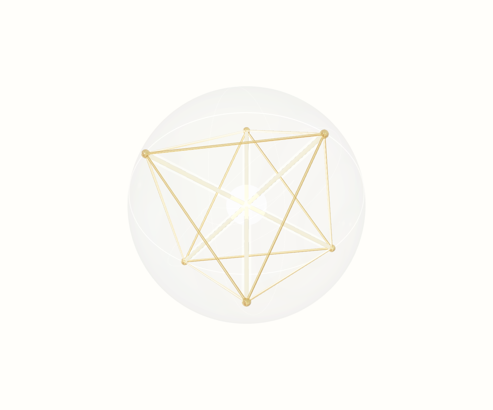

Small-Size Legibility
16 px

Fail Full geometry collapses.
32 px
Weak Recognizable only as a fine mark.
48 px
Weak Projection works; artifact still too detailed.
128 px
Pass System starts to read clearly.